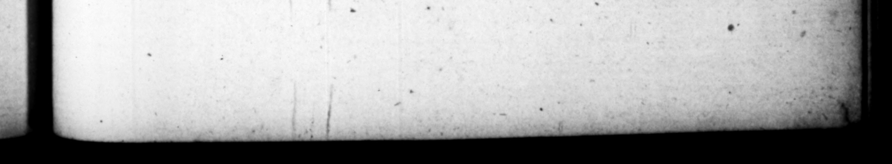

* * pf? n — M. 8 A C ſalloitati ' reliqui, nec adeo muiti, haud dubia fiducia in ipſo negotio phues af⸗ futuros. when the matter came to be publickly broached, they ſtoula have enough | | | 6. He had at firft an intention, in. mediately after the departure of Piſo, 2 cannp, and ful upm Galbs, | i p | to joyn them, 6, Erat animus poſt adoptionem ſtatim Caſtra occupare, coenantemque in Palatio Galbam aggredi : fed obſttitir reſpectus cohortis, quas tune excubabat, ne oneraretur invidia, quod. ejuſdem ſtatione & Caſus fuerat occiſus,'& deſertus Nero. Medium quoque tempus religio & Seleueus exemit. Ergo deſtinata die, _ conſciis, ut ſe in o ſub ede Saturni ad Miliarium aureum operirentur, mane Galbam falutavit : utque conſueverat, oſculo ex cepths, etiam ſacriſicanti interfuic. audivitque predicta haruſpicis. Deinde liberto adeſſe archite&os nuntiante, ſignum convenerat, quavænalem domum inſpecturus abſceſſit , proripuitque ſe poltica parte Palarii conſtitutrum. Ali febrem ſimulaſſe aiunt, eamque excuſationem proximis mandaſle, ſi quæreretur. Tune abditus propere muliebri ſella in Caſtra contendit : ac deflcientibus — cum — ua 5 curtumqu? Ceplader laxato oalceo — — omiſſa mora ſuccollatus, & a reſente comitatu IMPERAOR conſalutarus, inter fauſtas acclamationęs ſtrictoſque gladios ad principia devenit: obvio quoque, non aliter ac fi conſcius 1 eps foret, adhzrente, Ibi miſſis qui Galbam & Piſonem trueidarent, ad conciliandos poll1Citationibus militum animos nihil magis pro concione teſtatus eſt, quam, id demum ſe bn, us quad (bb reliqwiſe L v 1s O H O. en 303 Tanne 4: ten thouſand ; down, and were 1 — theſe others mam, from s co 5 dent #fſ urance, that It he was at hy oh in the palace, but was ve ſtrain d baitalim at that time upon duty, lu he. fbould bring too great an adam upon it, becauſe the be wpm the guard b Caius was * — — For ſome tim ter tos Be 2412 by ſcruple of mini about the neſs of the ſeaſon, as alſo the advice of Seleucui. Wherefore upon the day fixt for the deſign, having giver his accomp'ices notice to wait for bins in the forum, nigh the temple of Saere, both when turn, at the gilded Mile. pilla he wens in the morning to pay his rect, to Galbs 3 N being: received with 4 kiſs as uſual, he attended him at ſacrifice too, and beard the predictions of the haruſpex. After which a freedman er bringing him word, that the arL. een agrees upon, 4 drew as if it "were with a deſign to view # houſe u by a back. dr of the palace to the place apprinted. Some ſay he pretended himſelf taken with an ague fit, ordered thoſe about him to make that excuſe for him, if he was enquired af” ter. And then being quickly put inte s woman's ſedan, he made th: beſt of his way for the camp. But the chairmen growing tired, he came out, and began to run fir it ; bus bis ſhoe eming looſe, he flopt again; but being immedi ately taten up by his attendants their ſbwulders, and unanimouſly sluted by the title of Emperor, PR came amidſt lucky acclamations : drawn. ſwords to the principia in ho camp, al that met him joyning in fle cavalcade, as if they had been friur to the deſign. Upon this ſending — Jome to arſpatch Galbs and Piſa, þ, VE 7. Deine 4 a Mw. s regard for the ame happened to By were drawn iu, but 1% Nero deſerted. © ſale, and went o
